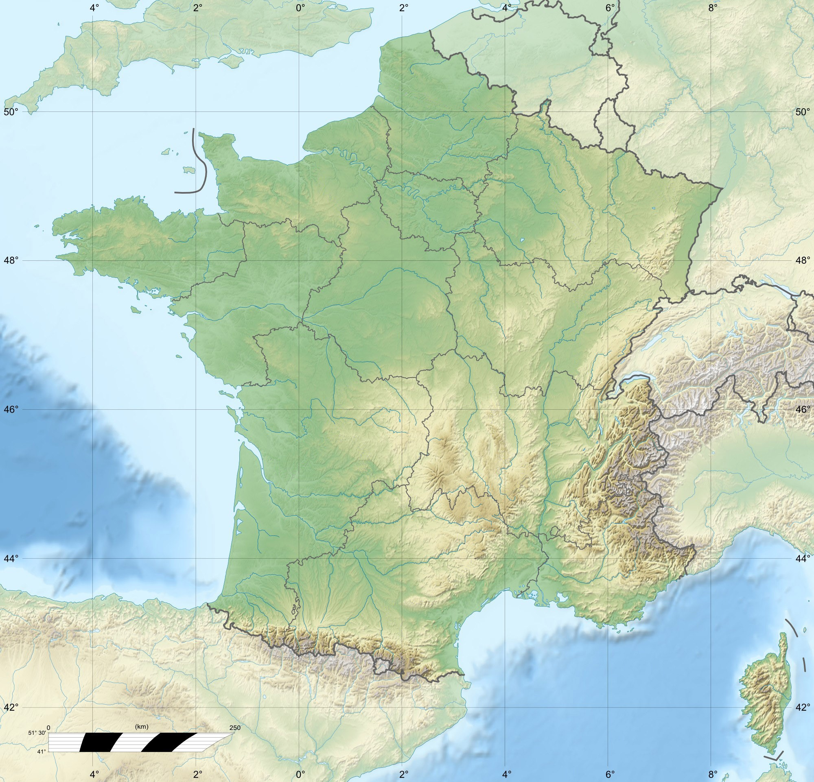

Bienvenue sur MapLand
Le site de cartes heuristiques prêt à vous aider dans vos révisions !
Cours à disposition

Histoire
Géographie

Physique

SVT
Do It Yourself !
Créez vos propres cartes avec XMind. Synthétisez, organisez et designez votre cour tel que vous le souhaitez. Téléchargez le logiciel sur le site dédié et lancez-vous dans le monde des cartes heuristiques !